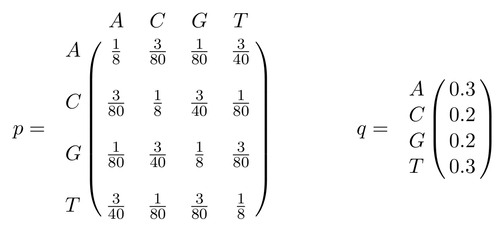
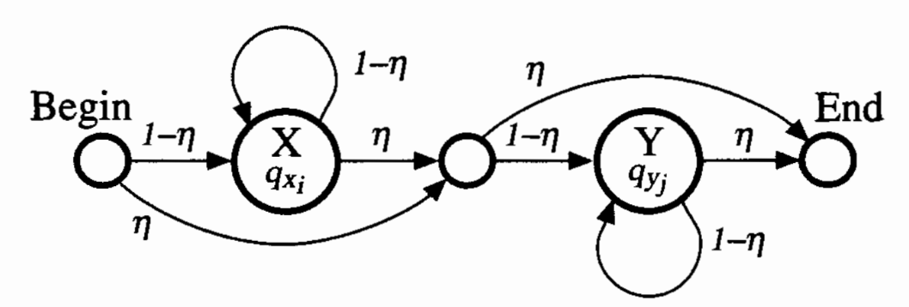

Exercise sheet 4: Pair-HMM
Exercise 1
You are given the basic pair-HMM for sequence alignment between two sequences:

Let \(\delta = 0.02\) and \(\epsilon=0.79\). The initial probability distribution of the states is given by \(\pi(M)=0.6\), \(\pi(I_x) = 0.2\) and \(\pi(I_y) = 0.2\). Furthermore, let all \(p(x_i,y_j)\) and \(q(x_i)\) (and \(q(y_j)\)) be given in matrix \(p\) and vector \(q\), respectively:

Identify the probabilities of the following alignments between sequences x=AGCGG and y=ACAGGGG.
Question 1A
x: AGCGG----
:::
y: --ACAGGGGFormulae
\(Prob(path=I_xI_xMMMI_yI_yI_yI_y)=\pi(I_x) \cdot \epsilon \cdot (1-\epsilon) \cdot (1-2\delta)^2 \cdot \delta \cdot \epsilon^3\)
\(Prob(O | path)=q(A) \cdot q(G) \cdot p(C,A) \cdot p(G,C) \cdot p(G,A) \cdot q(G)^4\)
\(Prob(path, O) = Prob(O | path ) \times Prob(O)\)
Solution
\(Prob(path=I_xI_xMMMI_yI_yI_yI_y) \approx 3.0 \cdot 10^{-4}\)
\(Prob(O | path) \approx 3.4 \cdot 10^{-9}\)
\(Prob(path,O) \approx 1.0 \cdot 10^{-12}\)
Question 1B
x: -AGCGG-
:::||
y: ACAGGGGFormulae
\(Prob(path=I_yMMMMMI_y)=\pi(I_y) \cdot (1-\epsilon) \cdot (1-2\delta)^4 \cdot \delta\)
\(Prob(O | path)=q(A) \cdot p(A,C) \cdot p(G,A) \cdot p(C,G) \cdot p(G,G) \cdot p(G,G) \cdot q(G)\)
\(Prob(path, O) = Prob(O | path ) \times Prob(O)\)
Solution
\(Prob(path=I_yMMMMMI_y) \approx 3.4 \cdot 10^{-9}\)
\(Prob(O | path)=q(A) \approx 3.3 \cdot 10^{-8}\)
\(Prob(path,O) \approx 2.4 \cdot 10^{-11}\)$
Question 1C
x: AGCGG------
:
y: ----ACAGGGGFormulae
\(Prob(path=I_xI_xI_xI_xMI_yI_yI_yI_yI_yI_y)=\pi(I_x) \cdot \epsilon^3 \cdot (1-\epsilon) \cdot \delta \cdot \epsilon^5\)
\(Prob(O | path)=q(A) \cdot q(G) \cdot q(C) \cdot q(G) \cdot p(G,A) \cdot q(C) \cdot q(A) \cdot q(G) \cdot q(G) \cdot q(G) \cdot q(G)\)
\(Prob(path, O) = Prob(O | path ) \times Prob(O)\)
Solution
\(Prob(path=I_xI_xI_xI_xMI_yI_yI_yI_yI_yI_y) \approx 1.2 \cdot 10^{-4}\)
\(Prob(O | path) \approx 2.9 \cdot 10^{-9}\)
\(Prob(path,O) \approx 3.7 \cdot 10^{-13}\)
Exercise 2
The following alignment of sequences a=AACTT and b=AACAT is not included in the set of alignments represented by the pair-HMM of exercise 1.
a: AACT-T
||| |
b: AAC-ATQuestion 2
Could you explain why?
Solution
Because the probability of moving from \(I_x\) to \(I_y\) is zero, there is no edge between \(I_x\) and \(I_y\).
Exercise 3
As you have seen, the given pair-HMM, which emits alignments of two sequences, gives us probabilities which are quite small for any particular alignment. These probabilities are often compared to other probabilites generated by a random model.
Question 3
Design a HMM which generates two random sequences with the frequencies of \(q_i\) given in exercise 1. Use the parameters \(\eta\) and \(1-\eta\) to describe the transition probabilities.
Hint
The proposed solution includes two main states, which in turn emits two sequences, independently of each other. Each has a loop back onto itself with probability (1-\(\eta\)). As well as Begin and End states, the proposed solution includes a silent state in between X and Y, used to gather inputs from both the X and Begin states.
Solution

Download: PDF Version of this page.